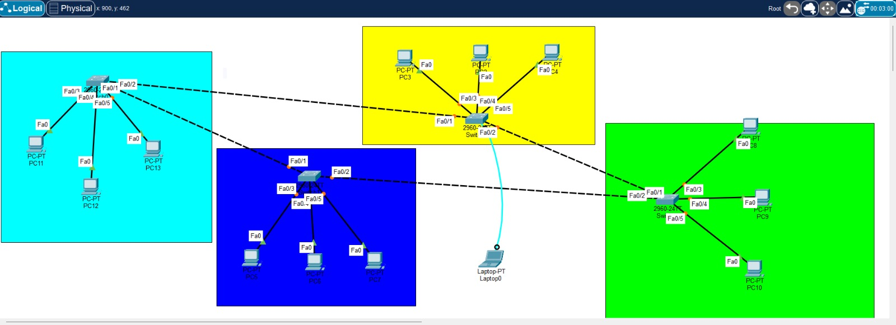
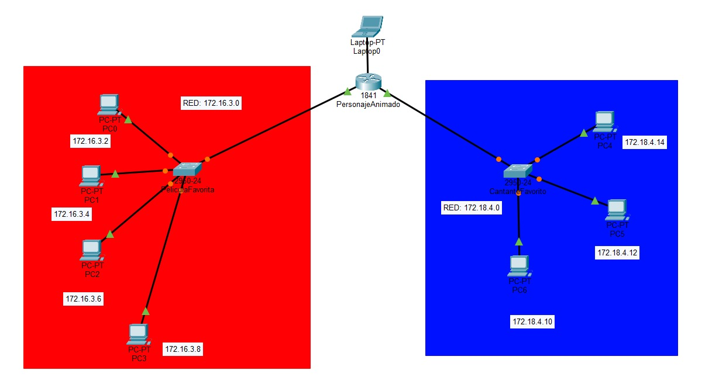
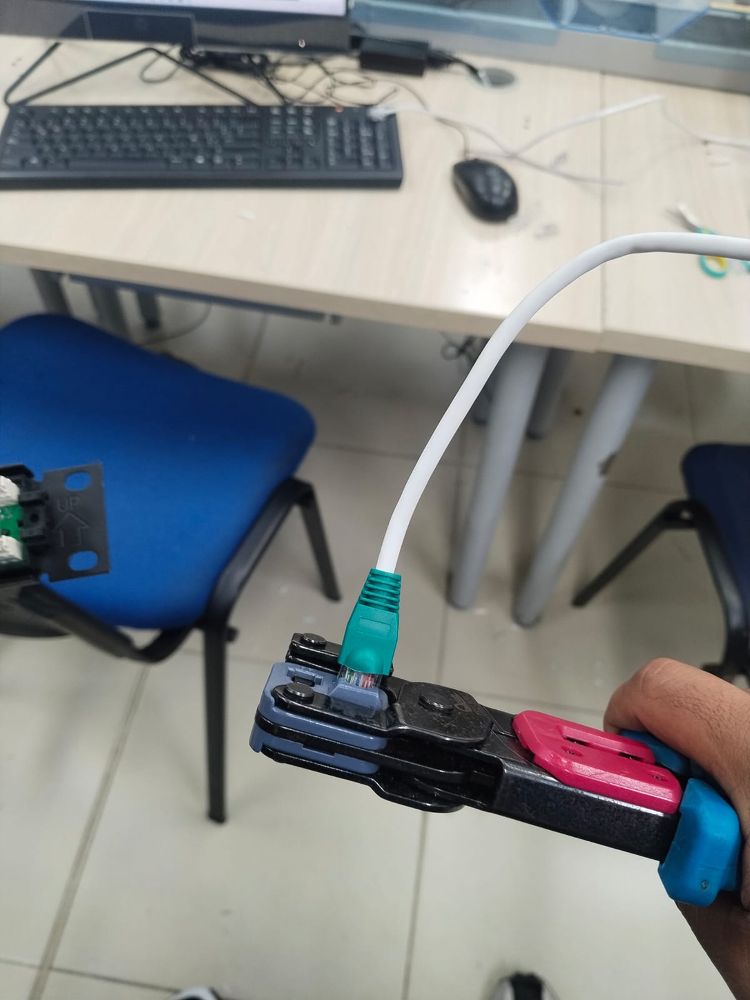
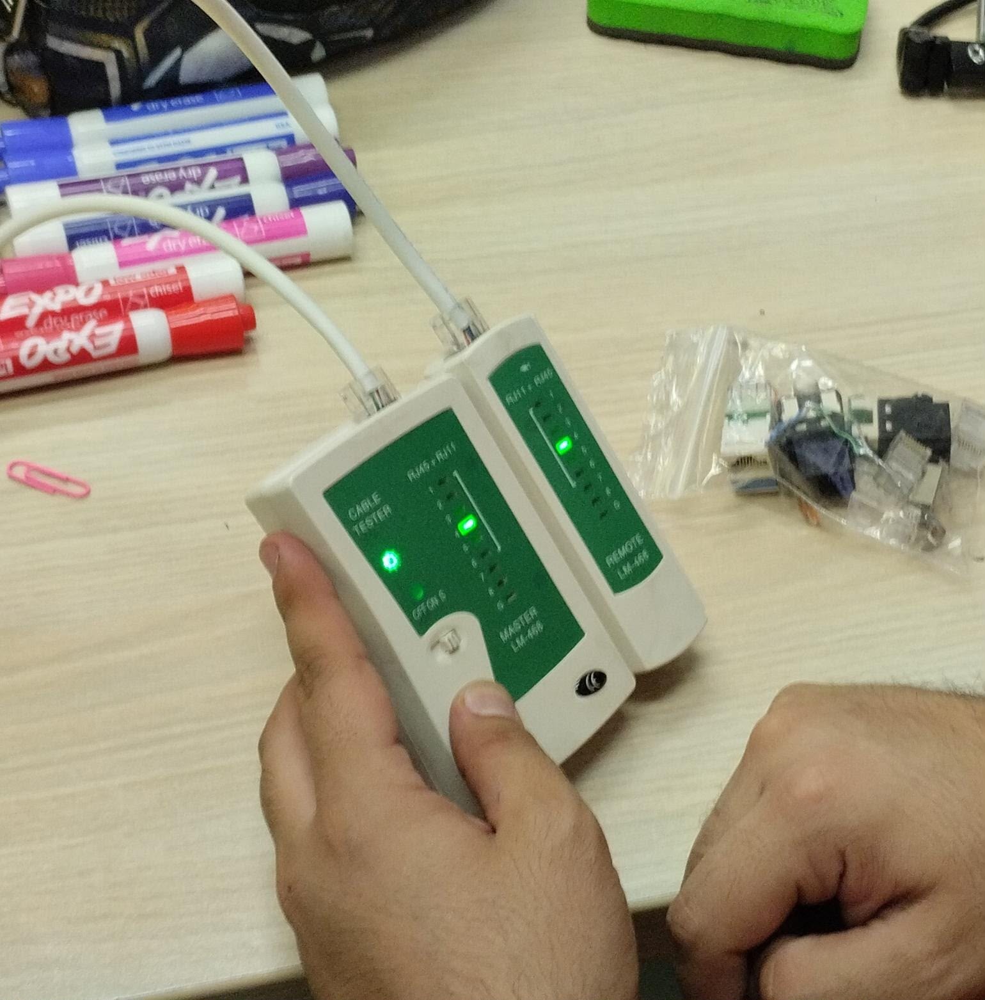
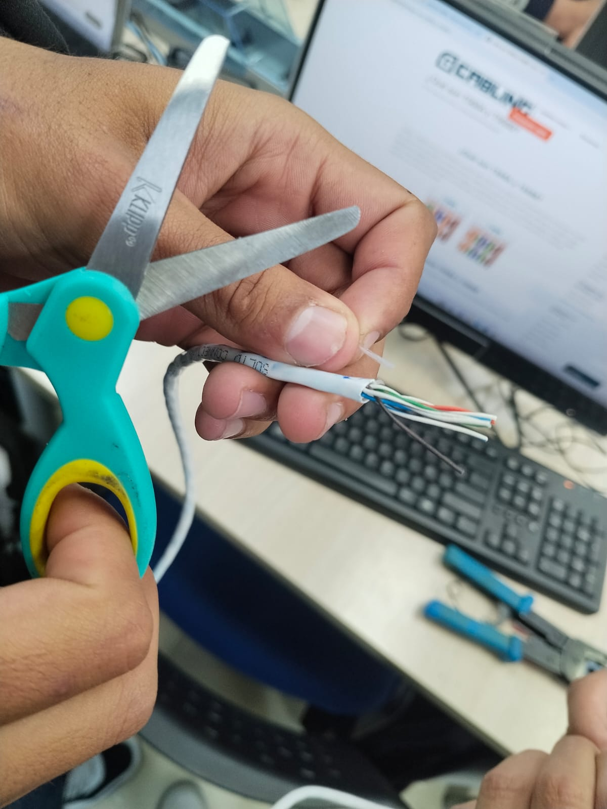
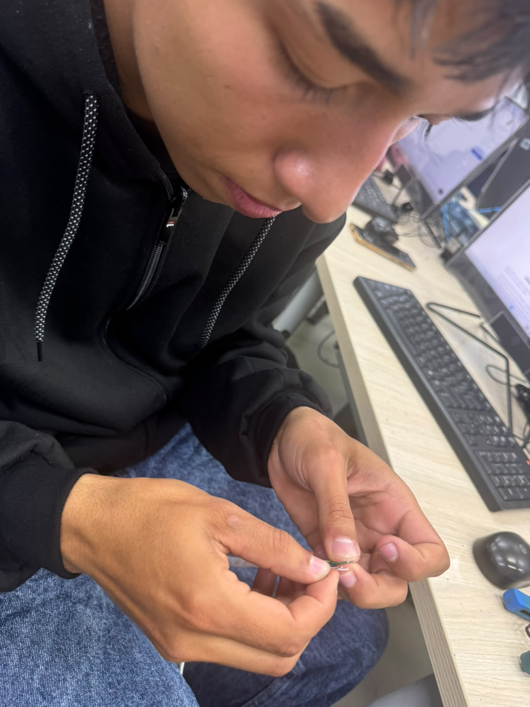

“Una red no es solo conectar dispositivos.”
El diseño debe responder a necesidades reales de conectividad, seguridad, rendimiento, disponibilidad y crecimiento.
SYSTEMS ENGINEERING / NETWORKS
Un recorrido de aprendizaje donde analizamos problemas, experimentamos, diseñamos soluciones y reflexionamos sobre la tecnología desde la perspectiva de un futuro ingeniero de sistemas.
Este ePortfolio reúne las experiencias, aprendizajes, evidencias y productos desarrollados durante el primer corte del curso. El proceso se organiza en cuatro semanas y busca evidenciar no solo conocimiento conceptual, sino la capacidad de analizar necesidades, formular alternativas, justificar decisiones y comunicar soluciones tecnológicas.
Selecciona una semana para ir directamente a su contenido.
De la identificación del problema a una propuesta de red para una institución educativa.
El diseño debe responder a necesidades reales de conectividad, seguridad, rendimiento, disponibilidad y crecimiento.
Analizamos la evolución de Internet y sus efectos sobre el estudio, el trabajo, la comunicación y las relaciones.
La institución cuenta aproximadamente con 800 estudiantes, 60 docentes y 30 funcionarios administrativos. Se distribuye en tres bloques: A (aulas y salas de profesores), B (laboratorios de informática y biblioteca) y C (oficinas administrativas, rectoría y coordinación).
Para los laboratorios proponemos una topología estrella, donde los equipos se conectan a un switch central. Facilita la administración y permite aislar fallas de cables o equipos. Su dependencia principal es el dispositivo central; por ello, en la infraestructura general se debe evitar un único punto crítico y contemplar redundancia cuando sea necesario.
Una arquitectura jerárquica puede combinar acceso, distribución y núcleo. Los equipos de usuarios, impresoras, cámaras y teléfonos IP funcionan principalmente como clientes; los servicios que requieren centralización pueden alojarse en servidores.
Switches administrables, router o equipo de capa 3, puntos de acceso, servidores y enlaces de fibra. Las VLAN pueden separar administración, estudiantes, docentes, invitados, telefonía IP, cámaras/IoT y servidores.
La escalabilidad se garantiza reservando capacidad en switches, puntos de red, direccionamiento y enlaces. La seguridad contempla autenticación, contraseñas robustas, control de acceso, actualización, redes inalámbricas separadas y monitoreo.
El producto debe comunicar visualmente el diagnóstico, la clasificación, el diseño, la justificación y la proyección de crecimiento.
Diseñar una red implica analizar necesidades antes de seleccionar dispositivos. Comprendimos la diferencia entre alcance, topología, relación funcional y medio de transmisión, y que una solución debe considerar rendimiento, seguridad, disponibilidad y crecimiento.
Internet amplió el acceso a información, comunicación, aprendizaje remoto y servicios digitales, pero también plantea desafíos relacionados con dependencia tecnológica, seguridad, privacidad, desinformación y brechas de acceso.
During this week, we learned that designing a network is not simply about connecting devices. We analyzed the needs of an educational institution and considered LAN, MAN and WAN concepts, topology, functional relationships and transmission media. We also reflected on how Internet changed society and why a technical solution must consider security, performance, availability and future growth.
La simulación como espacio para experimentar antes de intervenir una infraestructura real.
Packet Tracer permite construir redes virtuales, configurar dispositivos, probar conexiones y analizar errores.
La conectividad debe evaluarse junto con rendimiento, seguridad, disponibilidad, escalabilidad, administración y experiencia del usuario.
Si tuviéramos que implementar una red real y solo pudiéramos realizar una configuración definitiva, Packet Tracer permite reducir el riesgo mediante la construcción de escenarios, pruebas y alternativas antes de intervenir la infraestructura.
Una red puede permitir acceso a Internet y aun así presentar problemas de velocidad, seguridad, disponibilidad o administración. Desde el rol de futuro ingeniero de sistemas, evaluamos la calidad de una solución mediante siete dimensiones.

La inteligencia artificial puede apoyar la organización de ideas, la revisión de claridad y la estructuración de un producto académico. Las decisiones técnicas y la validación del contenido corresponden al equipo.
Declaración de uso: La IA se utilizó como apoyo para estructurar ideas, revisar la claridad de la explicación y orientar la presentación del contenido. La selección, comprensión y validación de las ideas corresponden al equipo.
This week showed us the value of testing before implementing. With Packet Tracer, we can build a virtual network, make mistakes, identify problems and compare solutions without affecting real users. We also learned that a network is not truly successful just because it connects devices: performance, security, availability, scalability, administration and user experience are also essential.
Comprender la comunicación mediante las capas del modelo OSI y su relación con TCP/IP.
Reconstruimos el recorrido de la información desde una acción del usuario hasta la respuesta.
Utilizamos una analogía cotidiana para explicar OSI y TCP/IP sin perder rigor técnico.
Un mensaje, una videollamada, un video o una actividad en un aula virtual parece una acción sencilla, pero detrás existe una interacción entre capas y protocolos. Seleccionamos un servicio digital frecuente y reconstruimos su recorrido.
El análisis no debe limitarse a definir las capas. Debe relacionarlas con el recorrido real del dato y explicar qué efecto tendría la pérdida de una función.
Una ciudad permite representar de forma cotidiana cómo diferentes elementos coordinan el movimiento de información. Las direcciones pueden representar direccionamiento; las vías, los medios; las reglas de tránsito, los protocolos; y los servicios, las aplicaciones. La analogía debe regresar finalmente a los conceptos técnicos reales de OSI y TCP/IP.

La analogía debe cerrarse conectando nuevamente las ideas con los modelos técnicos. El objetivo es comunicar una explicación comprensible sin perder precisión conceptual.
This week, we explored how information travels through different layers of communication. The OSI model helped us understand that a simple action such as sending a message depends on several coordinated functions. We also used a city analogy to explain networking concepts, while keeping the connection with real technical ideas and the TCP/IP model.
Analizamos protocolos, dependencia tecnológica y medios físicos e inalámbricos.
Analizamos una interrupción desde los niveles técnico, social y profesional.
Combinamos medios guiados y no guiados para diseñar infraestructura en un escenario real.
Imaginamos que un protocolo fundamental desaparece durante 24 horas. La guía propone seleccionar DNS, HTTP/HTTPS, BGP, UDP, SMTP, DHCP u otro protocolo visto en clase.
Identificar componentes y servicios afectados por el protocolo seleccionado y describir cómo se manifestaría la interrupción.
Analizar actividades cotidianas, educativas, empresariales o gubernamentales que se alterarían.
Diagnosticar, aislar el problema, evaluar alternativas, responder de forma controlada y recuperar el servicio.
Seleccionamos un campus universitario inteligente como escenario para combinar medios guiados y no guiados. La infraestructura debe considerar capacidad, estabilidad, distancia, interferencias, movilidad, costo y disponibilidad.

El análisis de protocolos y medios nos permite comprender que la experiencia del usuario depende de una infraestructura técnica que debe ser diseñada, protegida, monitoreada y preparada para fallas. El ingeniero de sistemas no solo conecta equipos: debe anticipar riesgos, justificar decisiones y garantizar que la solución responda al contexto.
During the fourth week, we analyzed what could happen if a fundamental Internet protocol disappeared and why society depends on network services. We also studied guided and wireless transmission media in a smart campus scenario. This helped us understand that engineers must consider reliability, distance, interference, cost, mobility and availability when designing communication infrastructure.
Las evidencias reales del equipo deben reemplazar los espacios de referencia.
Fotos de notas y actividades desarrolladas durante las sesiones.

Topologías, configuraciones, pruebas, errores y correcciones.

Diseños de red, OSI, TCP/IP y medios de transmisión.

Videos, podcasts, infografías, presentaciones o productos multimodales.

Marca cada criterio cuando esté realmente cumplido.
Este primer corte representa un recorrido desde los fundamentos hasta la reflexión profesional: diseñar, experimentar, comprender protocolos y reconocer la infraestructura que hace posible la comunicación.